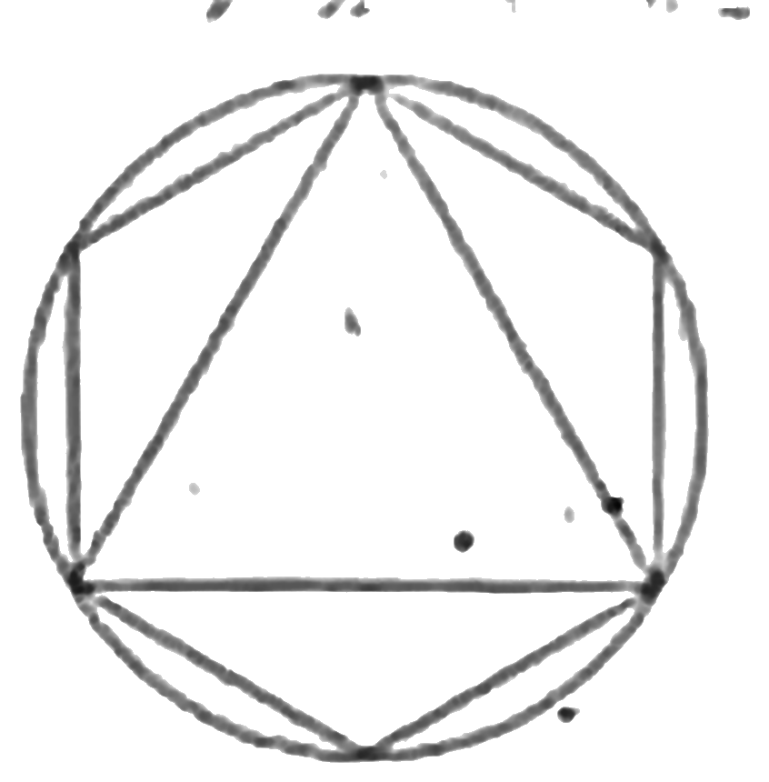

מקבץ 20
10 שאלות · עמודים 83–86 בספר
ערבבו 120 גרם של משקה בעל ריכוז של 40% אלכוהול עם 180 גרם של משקה אחר בעל ריכוז של 60% אלכוהול.
מה ריכוז האלכוהול בתערובת החדשה (באחוזים)?
הצגת הפתרון
התשובה הסופית3תשובה (3)52
דרך הפתרון והסבר
0.4·120 + 0.6·180 = 48 + 108 = 156 גרם אלכוהול מתוך 300 ⇒ 52%.
מוקשים נפוצים
ריכוז משוקלל לפי משקל, לא ממוצע של 40% ו־60%.
נבדקהפתרון תואם את מפתח התשובות של הספר.
לכל מספר x הוגדרה הפעולה $ כך: $(x) = ½ · $(x − 2)
$(2) = 16 , $(10) = ?
הצגת הפתרון
התשובה הסופית1תשובה (1)1
דרך הפתרון והסבר
$(4) = 8, $(6) = 4, $(8) = 2, $(10) = 1.
מוקשים נפוצים
לרוץ על הנוסחה צעד אחר צעד מ־2 עד 10 בקפיצות של 2.
נבדקהפתרון תואם את מפתח התשובות של הספר.
נתון: 3a = 6x + yx , x, a ≠ 0⚠
b = a + y + 6
ba = ?
הצגת הפתרון
התשובה הסופית4תשובה (4)1 + 3x
דרך הפתרון והסבר
3a = 6 + yx ⇒ 6 + y = 3ax. b = a + 3ax ⇒ ba = 1 + 3x.
מוקשים נפוצים
לכפול את 3a ב־x לפני שמציבים.
נבדקהפתרון תואם את מפתח התשובות של הספר.
נתון: x הוא מספר ראשוני דו־ספרתי שספרת העשרות שלו מהווה 80% מסכום ספרותיו.
מה סכום הספרות של x?
הצגת הפתרון
התשובה הסופית2תשובה (2)5
דרך הפתרון והסבר
עשרות t = 0.8(t + u) ⇒ t = 4u ⇒ 41 או 82. רק 41 ראשוני ⇒ סכום 5.
מוקשים נפוצים
t = 4u נותן גם 82 – לפסול אותו כי אינו ראשוני.
נבדקהפתרון תואם את מפתח התשובות של הספר.
נתונה תיבה שכל אחד ממקצועותיה הוגדל פי 2. פי כמה גדל שטח הפנים של התיבה?
הצגת הפתרון
התשובה הסופית2תשובה (2)4
דרך הפתרון והסבר
שטח הוא מכפלה של שני ממדים ⇒ פי 2² = 4.
מוקשים נפוצים
פי 8 הוא הנפח.
נבדקהפתרון תואם את מפתח התשובות של הספר.
נתון: 10 < a · b , 0 < b < 2
מה מהבאים נכון בהכרח?
הצגת הפתרון
התשובה הסופית3תשובה (3)5 < a
דרך הפתרון והסבר
b < 2 ⇒ a > 10b > 5.
מוקשים נפוצים
b חיובי ⇒ מותר לחלק בלי להפוך את הסימן.
נבדקהפתרון תואם את מפתח התשובות של הספר.
במגרש החניה של נמל חיפה חונים רכבים לבנים, שחורים ואפורים בלבד. ⅙ מהרכבים לבנים והיחס בין מספר הרכבים השחורים והאפורים הוא 5:2.
איזה מהבאים יכול להיות מספר הרכבים הכולל במגרש החניה?
הצגת הפתרון
התשובה הסופית3תשובה (3)168
דרך הפתרון והסבר
לבנים N6 ⇒ N מתחלק ב־6. השאר 5N6 מתחלק ל־5:2 ⇒ מתחלק ב־7. N מתחלק ב־42 ⇒ 168.
מוקשים נפוצים
מספר הרכבים מתחלק גם ב־6 וגם ב־7.
נבדקהפתרון תואם את מפתח התשובות של הספר.
בכמה מספרים תלת־ספרתיים ספרת המאות שווה למכפלה של ספרת האחדות בספרת העשרות?
הצגת הפתרון
התשובה הסופית4תשובה (4)23
דרך הפתרון והסבר
לכל ספרת מאות h = 1…9 סופרים זוגות (עשרות, אחדות) שמכפלתם h: 1+2+2+3+2+4+2+4+3 = 23.
מוקשים נפוצים
לספור גם (1,h) וגם (h,1) כזוגות שונים.
נבדקהפתרון תואם את מפתח התשובות של הספר.
נתון: y = x · 2x · 3x · 4x · 5x · … · 24x · 25x
y = ?
הצגת הפתרון
התשובה הסופית4תשובה (4)25! · x²⁵
דרך הפתרון והסבר
y = (1·2·…·25) · x²⁵ = 25! · x²⁵.
מוקשים נפוצים
(25x)! הוא דבר אחר לגמרי.
נבדקהפתרון תואם את מפתח התשובות של הספר.

בסרטוט שלפניכם מעגל ובו חסום משושה משוכלל. בתוך המשושה המשוכלל הועברו 3 אלכסונים שיוצרים משולש שווה צלעות.
לאור נתונים אלו ונתוני הסרטוט, מה ההפרש בין השטח האפור והשטח הלבן?
⚠ התשובות קטנות – נקראו בקירוב; לא ברור מהסרטון אילו אזורים אפורים.
הצגת הפתרון
התשובה הסופית4תשובה (4)r²(π − 2√32)
דרך הפתרון והסבר
שטח המעגל πr², המשושה (3√32)r², המשולש (3√34)r². ההפרש לפי האזורים הצבועים יוצא r²(π − √3).
מוקשים נפוצים
לזהות אילו אזורים צבועים לפני שמחסירים.
דורש בדיקההמקור לא חד או סותר את המפתח. התשובה המוצגת היא לפי מפתח הספר.
תשובות (1) ו־(4) כפי שהועתקו שוות זו לזו – אחת מהן נקראה לא נכון. התשובה לפי המפתח: (4).
אין במקבץ הזה שאלות שמתאימות לסינון.